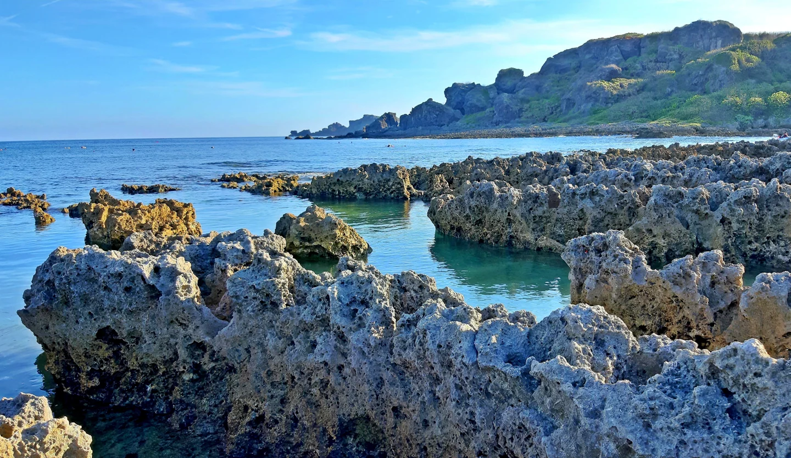
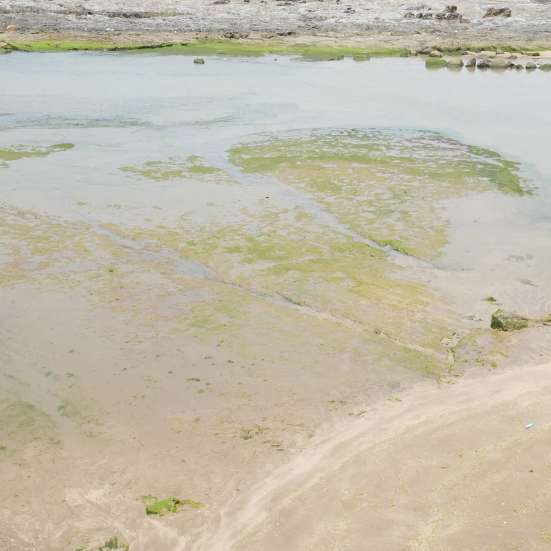
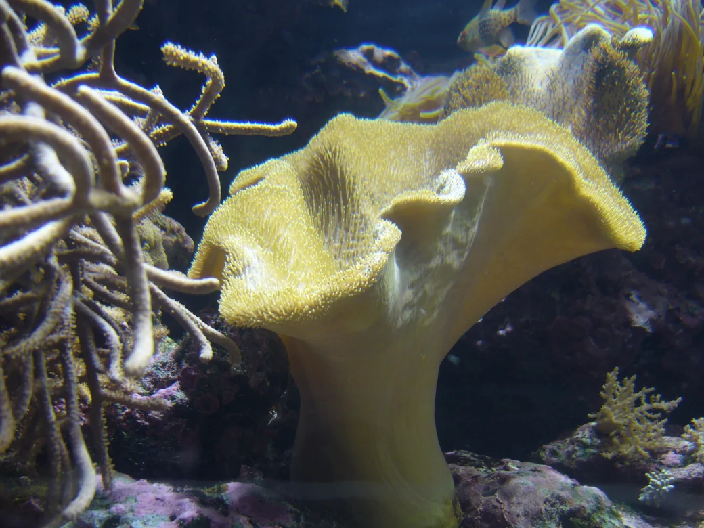
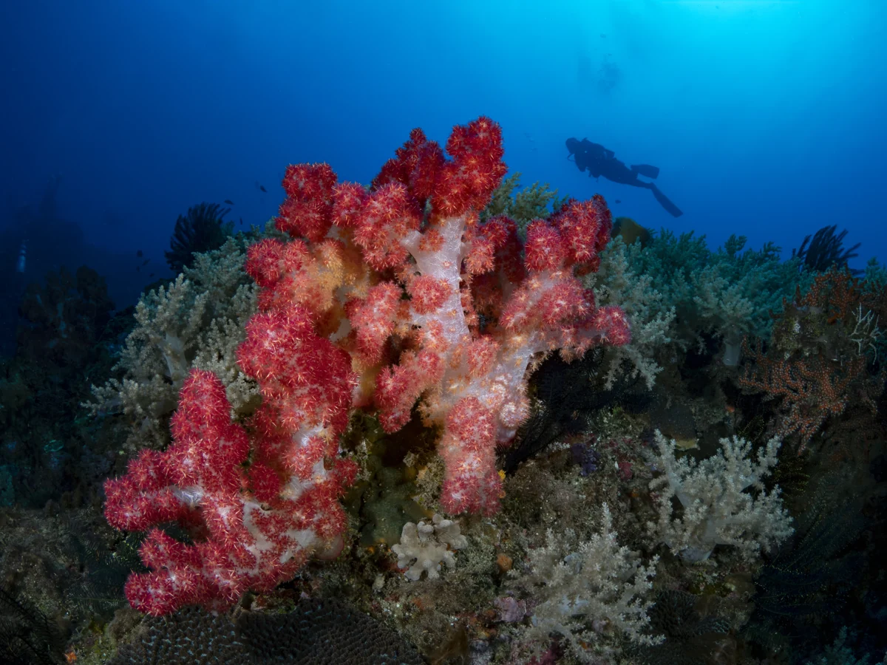

退潮之後，黏在岩石上的生物怎麼撐過去？
潮間帶與淺海
岩石在漲潮時浸水，退潮後又露出來。這段位於高潮水位與低潮水位之間的海岸，就是潮間帶。

魏琬臻（WEI, WAN-CHEN） · CC BY-SA 4.0 · 本站縮圖

能附著，也得能等海水回來
在岩岸上，藤壺會牢牢固定在岩面。退潮時牠能關上殼口減少水分散失。再次被海水淹過時，就能伸出羽毛狀的附肢，把浮在水裡的小食物送進嘴裡。潮間帶可以是岩岸，也可以是沙岸、泥岸或礁岸。底部是什麼材質，會影響生物是黏在表面、躲進縫隙，還是鑽進沙泥。
一直泡在水下的淺海，又有另一種挑戰
許多造礁珊瑚的體內有共生藻，也就是和珊瑚一起生活、利用陽光製造養分的藻類。珊瑚累積的骨骼能形成礁體，提供魚和其他動物藏身的縫隙。如果水溫持續偏高，珊瑚可能失去共生藻而變白，稱為珊瑚白化。
潮間帶
潮水反覆淹沒與露出海岸。岩岸能提供固定的表面，沙岸的沙粒則更容易隨浪移動。
藻類石蓴是綠藻，常呈薄片狀。觀察時可比較露出水面的岩塊和還濕潤的岩縫。
動物藤壺固定生活，笠螺則可在岩面上移動、刮食藻類，也能靠寬大的足吸附在岩面。


淺海與珊瑚礁
陽光容易照到近岸較淺的海底。有礁體的地方，洞穴與縫隙能供不同動物躲藏。
藻類有些大型海藻附著在淺海岩石上；珊瑚體內的共生藻則在珊瑚的組織裡利用陽光。
動物造礁石珊瑚是動物，牠們的硬骨骼能累積成礁。墾丁礁區常見雀鯛、隆頭魚等魚類。

Caitriana Nicholson · CC BY-SA 2.0 · 本站縮圖

水下看見的海雞冠


同在礁區，珊瑚也有不同外形。軟珊瑚的外觀柔軟，與外面由硬骨骼形成的造礁石珊瑚不同。
想一想
觀察同一片海岸時，把目光從露出的岩面移到留水的潮池，再移向較深的淺海。你看到的生物往往也會跟著換一批。
退潮時，藤壺為什麼沒有離開那塊石頭？
成年的藤壺固定在岩面上，利用殼口的開合度過乾露與浸水的變化。
資料來源
教材｜《高中基礎生物（下）》6-3，頁 152–156